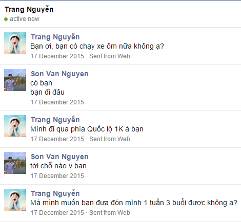

Quà nè zô lấy đi bèo
Quà nè zô lấy đi bèo
 Đọc xong thì gọi nhé
Đọc xong thì gọi nhé
 Facebook cho anh nhé
Facebook cho anh nhé

Những ngày đầu quen nhau 17-12-2015 !
em và anh quen nhanu một cách tình cờ nơi mà người ta hay gọi là thế giới ảo , không biết duyên số thế nào mà đẩy đưa em đi tìm xe ôm vào một ngày anh đang rảnh và câu chuyện cứ thế được viết tiếp những ngày sau đó. Em một nữ sinh UEL năm nhất gặp một ông chú năm tư già đầu và khó tính. Có những chuyện sau này anh mới biết lí do em đi kiếm xe ôm hay gì gì đó... Em đã đề ra cái luật 2 tháng oái om và lúc nào cũng nhắc đi nhắc lại cái luật 2 tháng đó. Cứ lúc nào em giận là lại lôi cái luật đó ra hỏi anh "bao giờ chú chia tay cháu " - ê nè anh thì sợ và hỏi em bao giờ em chia tay anh thì em nói nha .... vậy là hòa rồi cả em và anh đều sợ vì chúng ta cũng đã từng có tình yêu của riêng mình trước khi gặp nhau ^^. Những cảm xúc ban đầu đối với anh thật khó tả . Mới 2 ngày anh cầm tay em và em kêu sao nhanh vậy ^^ thật ra lúc đó cũng ngại và cũng sợ em "khó tính" lấy tăng quăng tay anh ra - Kéo xuống đọc tiếp
em và anh quen nhanu một cách tình cờ nơi mà người ta hay gọi là thế giới ảo , không biết duyên số thế nào mà đẩy đưa em đi tìm xe ôm vào một ngày anh đang rảnh và câu chuyện cứ thế được viết tiếp những ngày sau đó. Em một nữ sinh UEL năm nhất gặp một ông chú năm tư già đầu và khó tính. Có những chuyện sau này anh mới biết lí do em đi kiếm xe ôm hay gì gì đó... Em đã đề ra cái luật 2 tháng oái om và lúc nào cũng nhắc đi nhắc lại cái luật 2 tháng đó. Cứ lúc nào em giận là lại lôi cái luật đó ra hỏi anh "bao giờ chú chia tay cháu " - ê nè anh thì sợ và hỏi em bao giờ em chia tay anh thì em nói nha .... vậy là hòa rồi cả em và anh đều sợ vì chúng ta cũng đã từng có tình yêu của riêng mình trước khi gặp nhau ^^. Những cảm xúc ban đầu đối với anh thật khó tả . Mới 2 ngày anh cầm tay em và em kêu sao nhanh vậy ^^ thật ra lúc đó cũng ngại và cũng sợ em "khó tính" lấy tăng quăng tay anh ra - Kéo xuống đọc tiếp

Cảm ơn em đã đến bên anh và xua tan đi cái buồn tẻ cuộc sống hằng ngày của anh lúc đó , một đứa con trai IT chỉ biết ăn ngủ và code rồi gậm nhấm nỗi buồn nhưng lúc mệt nhọc một mình
Em từng hỏi tại sao anh lại thích em hay tại sao anh lại yêu em và a thì cứ lấy lí do lí trấu này nọ nhưng thực ra thì a cũng không biết là tại sao nữa ! Tại định mệnh chăng (coi như là vậy đi hen) em một cô gái với nước da ngâm ngâm đen và mái tóc dài đã làm a chết mê mệt (thật đấy) và đôi khi cũng nói ra một cách thẳng thắn quá để anh buồn ... Có những thứ em giỏi , dở và ngược lại anh cũng thế nên chúng ta hãy làm một nửa của nhau nhé hãy bù đắp cho nhau để cuộc sống trở nên tươi đẹp hơn. Anh thì hay sến súa làm này làm nọ ^^ cơ mà nếu làm như điều đó mà em thích em vui thì thế nào a cũng làm , ví dụ như dí theo xe về Gia Lai lúc đó giống đang đóng phim không bèo ^^ quá giống healer (mỗi tỗi xấu trai hơn healer thôi). Anh viết dài em ráng đọc nhé, văn vẻ cũng không hay nhưng mà anh sẽ ráng sửa. Anh sẽ sửa những tật xấu của mình nữa để em khỏi ghét và hỏi "Khi nào chú chia tay cháu thì nói nha !".
♥♥♥♥♥♥♥♥♥♥♥♥♥♥♥♥♥♥♥♥♥♥♥♥♥♥♥♥♥♥♥♥♥♥♥♥♥♥♥♥♥♥♥♥♥♥♥♥♥♥♥♥♥♥♥♥♥♥♥♥♥♥♥♥♥♥♥♥♥♥♥♥♥♥♥♥♥♥♥♥♥♥♥♥
Em từng hỏi tại sao anh lại thích em hay tại sao anh lại yêu em và a thì cứ lấy lí do lí trấu này nọ nhưng thực ra thì a cũng không biết là tại sao nữa ! Tại định mệnh chăng (coi như là vậy đi hen) em một cô gái với nước da ngâm ngâm đen và mái tóc dài đã làm a chết mê mệt (thật đấy) và đôi khi cũng nói ra một cách thẳng thắn quá để anh buồn ... Có những thứ em giỏi , dở và ngược lại anh cũng thế nên chúng ta hãy làm một nửa của nhau nhé hãy bù đắp cho nhau để cuộc sống trở nên tươi đẹp hơn. Anh thì hay sến súa làm này làm nọ ^^ cơ mà nếu làm như điều đó mà em thích em vui thì thế nào a cũng làm , ví dụ như dí theo xe về Gia Lai lúc đó giống đang đóng phim không bèo ^^ quá giống healer (mỗi tỗi xấu trai hơn healer thôi). Anh viết dài em ráng đọc nhé, văn vẻ cũng không hay nhưng mà anh sẽ ráng sửa. Anh sẽ sửa những tật xấu của mình nữa để em khỏi ghét và hỏi "Khi nào chú chia tay cháu thì nói nha !".
♥♥♥♥♥♥♥♥♥♥♥♥♥♥♥♥♥♥♥♥♥♥♥♥♥♥♥♥♥♥♥♥♥♥♥♥♥♥♥♥♥♥♥♥♥♥♥♥♥♥♥♥♥♥♥♥♥♥♥♥♥♥♥♥♥♥♥♥♥♥♥♥♥♥♥♥♥♥♥♥♥♥♥♥
Món quàn này chỉ có tinh thần và không có chút vật chất nào cả! A mong em khi đọc hết những dòng ở trên sẽ mỉm cười ! và nhớ đến anh . Chú của Cháu --- Mountain Nguyễn ---